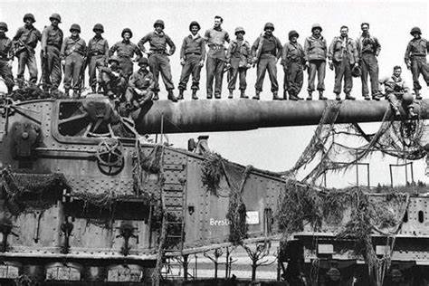
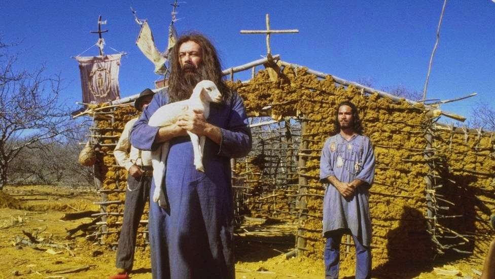
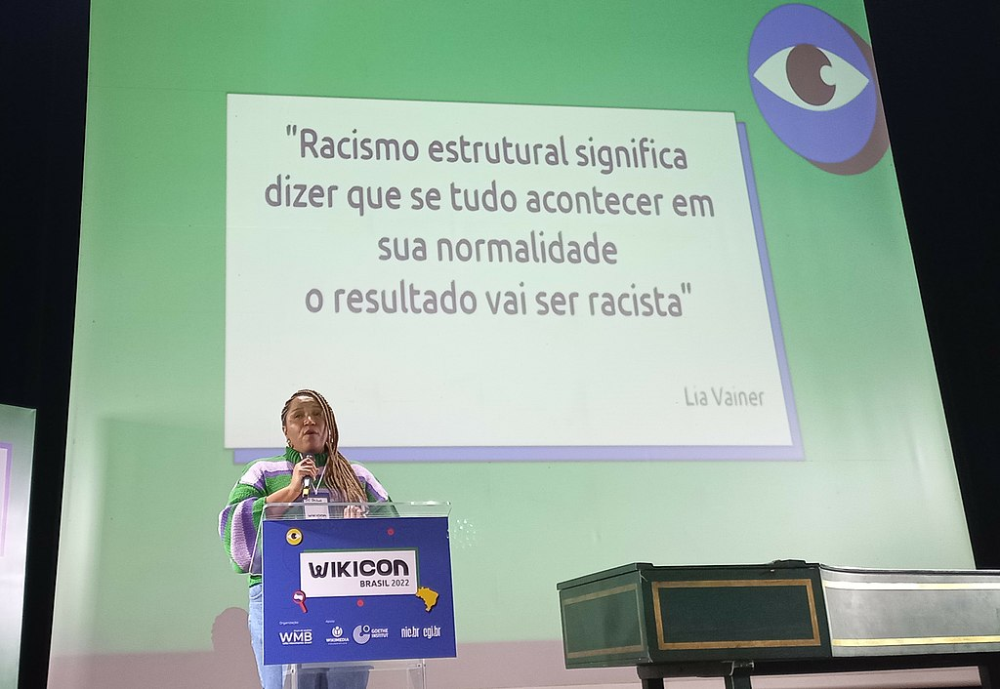
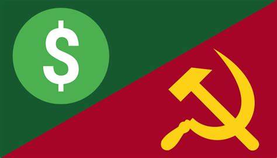

Segunda Guerra Mundial
- Resumo:
Caracterizada como um conflito em estado de guerra total (no qual há mobilização de todos os recursos para a guerra),
a Segunda Guerra Mundial fez Aliados e Eixo enfrentarem-se na Europa, África, Ásia e Oceania.
Após seis anos de conflito, mais de 60 milhões de pessoas morreram.
A Segunda Guerra Mundial teve como grande causa o expansionismo e o militarismo da Alemanha Nazista. Essa postura da Alemanha refletia diretamente a ideologia dos nazistas, que haviam alcançado o poder da Alemanha em 1933.
A ação dos nazistas resultava, em grande parte, da insatisfação de uma parte radicalizada da sociedade alemã com o desfecho da Primeira Guerra Mundial.
Ao final da Primeira Guerra Mundial, consolidou-se fortemente na sociedade alemã uma ideia de que a derrota na guerra havia sido injusta.
Somado a isso, havia também a grande humilhação que a Alemanha sofreu com o Tratado de Versalhes,
acordo que pôs fim à Primeira Guerra e que proibia a Alemanha de ter navios e aviões de guerra, limitou ao número de 100 mil os soldados de infantaria,
obrigou a nação alemã a pagar uma indenização altíssima e a entregar suas colônias para aqueles que a derrotaram.

A Guerra dos Canudos
Guerra de Canudos ou Campanha de Canudos foi um conflito armado que envolveu o Exército Brasileiro e membros da comunidade sócio-religiosa liderada por Antônio Conselheiro, em Canudos, no interior do estado da Bahia.Os confrontos ocorreram entre 1896 e 1897, com a destruição da comunidade e a morte da maior parte dos 25 000 habitantes de Canudos.
A região, historicamente caracterizada por latifúndios improdutivos, secas cíclicas e desemprego crônico, passava por uma grave crise econômica e social. Milhares de sertanejos partiram para Canudos, cidadela liderada pelo peregrino Antônio Conselheiro, unidos na crença numa salvação milagrosa que pouparia os humildes habitantes do sertão dos flagelos do clima e da exclusão econômica e social. Os grandes fazendeiros da região, unindo-se a parte do clero local, iniciaram um forte grupo de pressão junto à República recém-instaurada, pedindo que fossem tomadas providências contra Antônio Conselheiro e seus seguidores. Criaram-se rumores de que Canudos se armava para atacar cidades vizinhas e partir em direção à capital para depor o governo republicano e reinstalar a Monarquia. Apesar de não haver nenhuma prova para estes rumores, o Exército foi mandado para Canudos. Três expedições militares contra Canudos saíram derrotadas, o que apavorou a opinião pública, que acabou exigindo a destruição do arraial, dando legitimidade ao massacre de até vinte mil sertanejos. Além disso, estima-se que cinco mil militares tenham morrido. A guerra terminou com a destruição total de Canudos, a degola de muitos prisioneiros de guerra, e o incêndio de todas as casas do arraial.

Racismo Estrutural
O racismo estrutural é o racismo que está presente na própria estrutura social. Segundo essa concepção, o racismo não seria uma anormalidade ou "patologia", mas o resultado do funcionamento "normal" da sociedade. Deste modo, nas palavras de Silvio Almeida, a sociedade seria uma "máquina produtora de desigualdade racial".[1] O termo foi desenvolvido em parte para ajudar as pessoas que trabalham em prol da equidade racial a enfatizar a ideia de que o racismo na sociedade é um sistema, com uma estrutura clara e com múltiplos componentes.[2] O conceito de racismo estrutural é também usado para a defesa de ações afirmativas, como a implantação de cotas raciais em universidades, pois, se a própria estrutura da sociedade é racista, a desigualdade racial tenderá a se perpetuar, caso algo não seja feito a respeito.- Definições
O autor e diretor-presidente do Instituto Luiz Gama, Silvio Almeida, em seu livro Racismo Estrutural (2018) aborda diversas manifestações do preconceito racial. Para Almeida, há três concepções do racismo: o racismo individual, que trata o racismo como uma atitude do indivíduo que pode ter um problema psicológico, comportamental etc; o racismo institucional, uma concepção mais sofisticada que considera o racismo como resultado do funcionamento das instituições; e por fim o racismo estrutural, que é o racismo da própria sociedade. Deste modo, este é o racismo que possibilita o racismo institucional. Se há práticas racistas nas instituições, é porque a própria sociedade é racista.[1][3] O racismo estrutural é responsável não só pelo racismo institucional, como também para o racismo individual, já que, para Almeida, todo racismo é estrutural.[1] Entretanto, ao considerar o racismo como parte da estrutura social não exime a responsabilidade das pessoas em combater atos racistas individuais:
"pensar o racismo como parte da estrutura não retira a responsabilidade individual sobre a prática de condutas racistas e não é um álibi para racistas. Pelo contrário: entender que o racismo é estrutural, e não um ato isolado de um indivíduo ou de um grupo, nos torna ainda mais responsável pelo combate ao racismo e aos racistas."
— Silvio Luiz de Almeida em Racismo Estrutural

Capitalismo x Socialismo
O capitalismo e o socialismo são sistemas político-econômicos distintos e que são considerados antagônicos. O capitalismo é um sistema que se baseia no lucro, na defesa da propriedade privada, na livre iniciativa, no livre-comércio e no individualismo. A riqueza nesse sistema é considerada mérito da pessoa. O socialismo, por sua vez, é contra a existência da propriedade privada e defende os interesses da coletividade. No socialismo, os meios de produção são controlados pelos trabalhadores e pelo Estado a fim de reduzir as desigualdades sociais, ofertando trabalho para todos e distribuindo igualmente a riqueza produzida.Resumo sobre diferenças entre Capitalismo e Socialismo
- O capitalismo é um sistema econômico que se pauta na busca pelo lucro
- O socialismo defende a distribuição da riqueza produzida pela sociedade de maneira igualitária.
- O capitalismo defende o individualismo e a propriedade privada.
- O socialismo defende a coletividade, a igualdade e se opõe à propriedade privada.
- Capitalismo e socialismo são ideologias antagônicas. No período da Guerra Fria, uma forte rivalidade se desenvolveu entre os seus defensores.

Para saber mais sobre Capitalismo x Socialismo, clique aqui
| CAPITALISMO | SOCIALISMO |
|---|---|
| Divisão de classes sociais: burguesia e assalariados | sociedade igualitária, sem divisão de classe |
| economia de mercado, comandada por empresas | economia planificada |
| propriedade privada dos meios industriais | propriedade coletiva dos meios de produção |